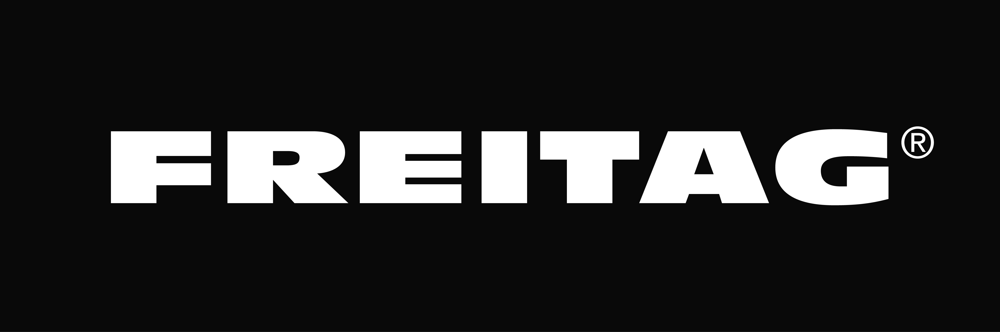
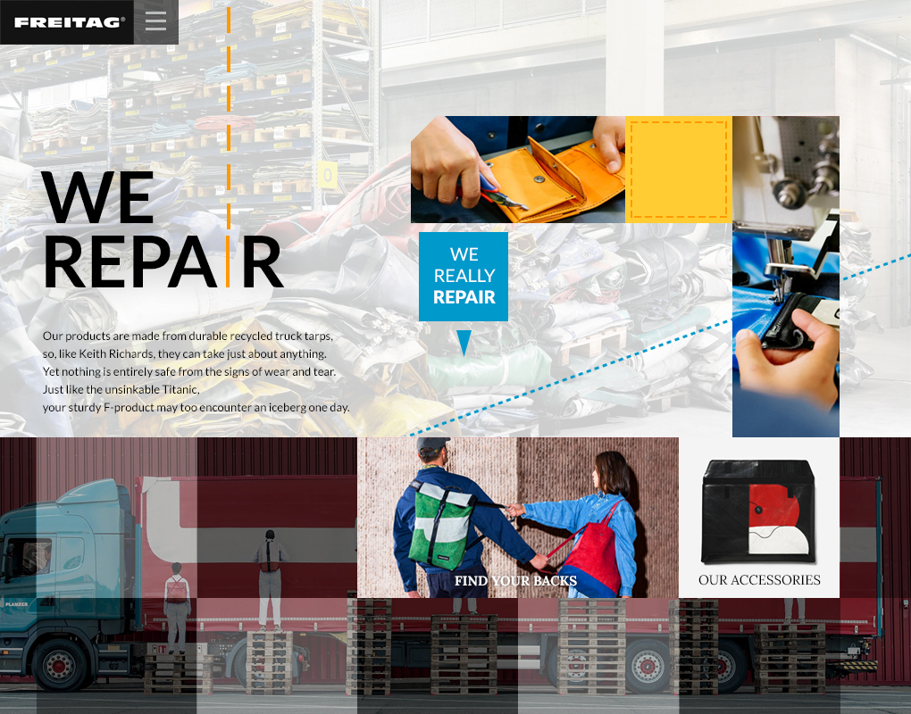
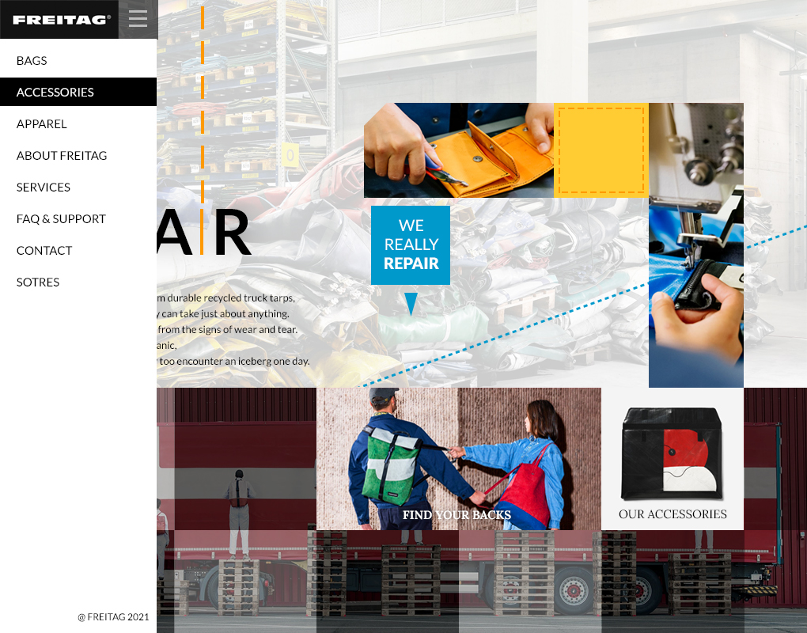

FREITAGUI/UX Design
Overview
그리드 레이아웃을 적용하여 리뉴얼한 UI디자인입니다. 단순 그리드형 이미지 배치가 아닌, 그리드 간 조합을 통하여 '재봉틀'이라는 브랜드의 이미지를 추가 표현하였습니다.
더불어 'WE REPAIR' 슬로건 문구 및 전체 그리드에 어울리는 타이포그래피를 활용하여 업사이클링을 상징하였습니다.
-
- 작업 기여도
- 개인작업 100%
-
- 작업 프로그램

Concept
- Analysis
- 프라이탁은 버려진 천막, 자동차 방수포 등을 가방으로 재활용하는 대표적인 업사이클링 업체입니다. 재료의 특성상 모든 제품은 사람의 손으로 직접 만들어지며 동일 디자인의 물품이 없습니다.
- Design Concept
- 그리드 레이아웃을 이용하여 핸드메이드의 이미지를 부여할 수 있는 재봉틀 오브젝트를 만들었습니다. 헌제품이 가진 부정적 이미지를 방지하고자 전체적으로 밝고 깔끔한 색상으로 구성하였습니다.
- Keyword
-
- # 업사이클링
- # 핸드메이드
- # 깔끔함
- Mood Board
- Color
-
- Main
- #f7f6f2
- Sub
- #000000
- Point
- #ffcc33
- #0099cc
- Typo
-
- Lato Bold
- Lato Regular
- Lora Bold
Work Process
그리드 스타일 레아이웃을 활용하였습니다.
Output
Display(width * height) : 1024px * 800px
- MAIN PAGE
- Navigation 버튼 클릭 시 주 메뉴 오픈
- WE REPAIR 헤드라인에서 영문 'I'
바느질 모양 및 포인트 색상으로
타이포그래피 - 그리드 스타일 백그라운드 이미지 편집
- 네비게이션 메뉴 Hover 시 효과
- Footer-네비게이션 내 하단 삽입
- 
- 
- 그리드 활용 이미지 배치를 통한
재봉틀 이미지 표현 - 좌측 타이포그래피와 디자인 통일
선요소 배치 - 클릭 가능 퀵메뉴
사용자 검색 빈도수에 따른 메뉴 노출 - 채도를 통한 백그라운드와 분리
(활성화 메뉴 표시)